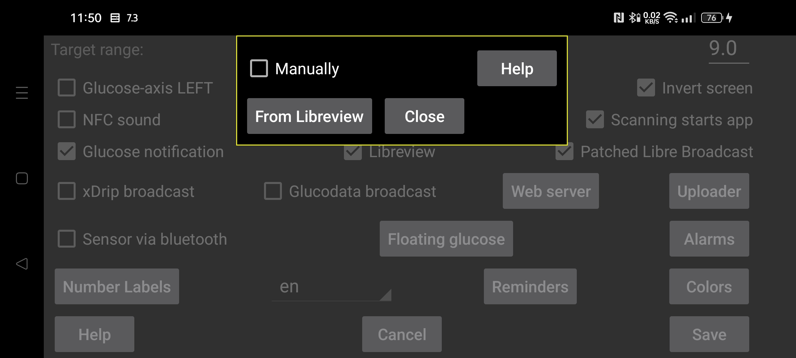

ar be de es fr hi it ja nl pl ru tr uk uz zh en
How to get the Libreview account ID needed to for scanning a Freestyle Libre 3 sensor via NFC? If you specify "Manually", you can enter the Account ID manually. You can also unset “manually” and press on "From Libreview" to use you account e-mail address and password to receive it from Libreview.
It is also possible to receive the Libreview Account id from Libreview and thereafter set "manually" and change the Libreview account e-mail address and password. When you thereafter set "Send to Libreview" and press "Resend data", data will be sent to that different Libreview account, but the previous/manually entered account ID will still be used to scan the sensor via NFC. This way, Juggluco sends data to a different Libreview account than Abbotts Libre 3 app uses.